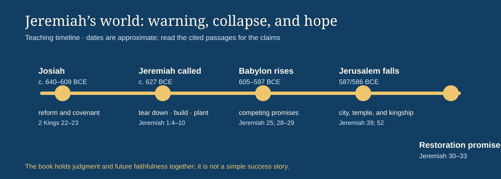
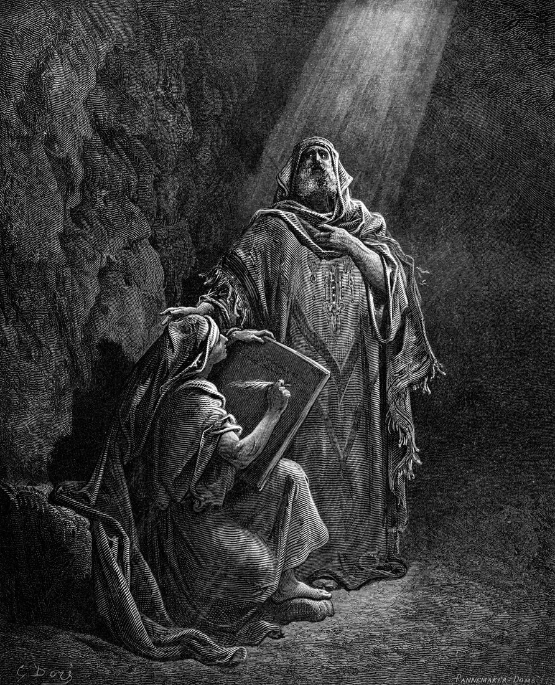
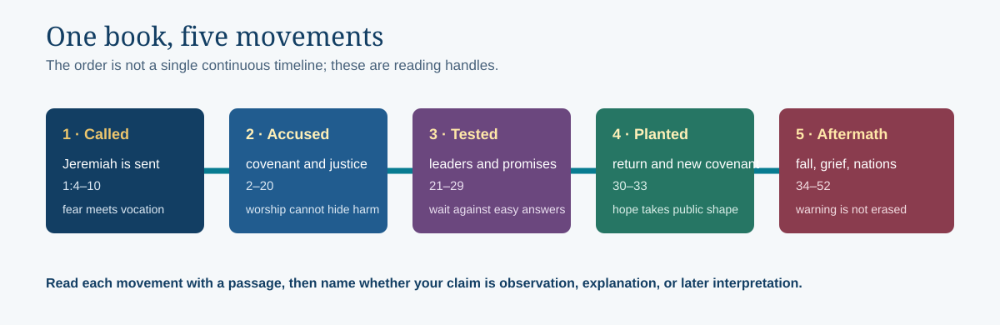
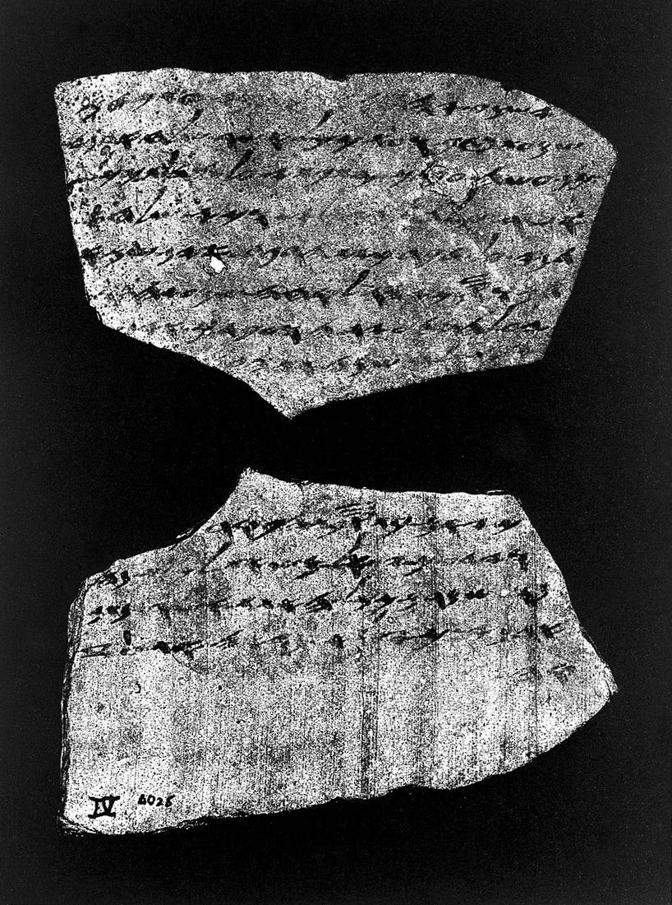
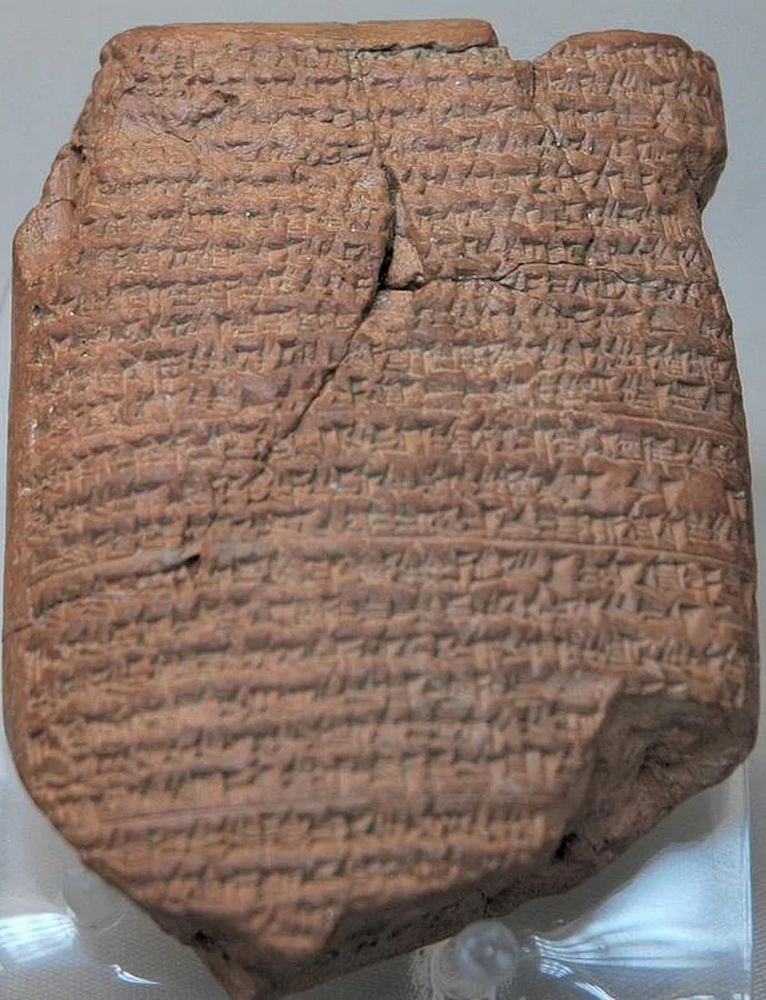
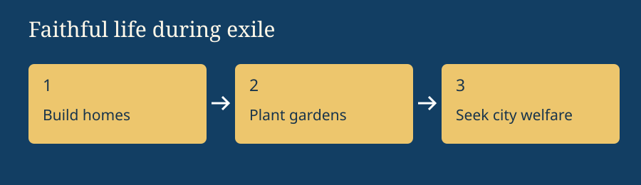
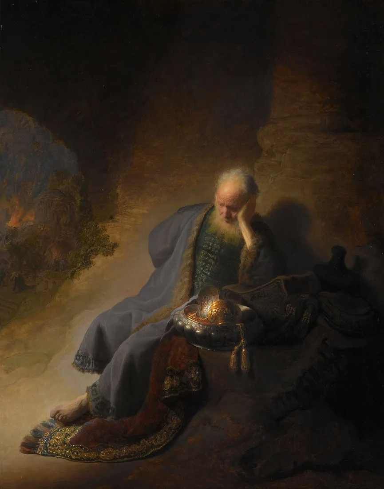

Israel, Covenant & Prophets · Grades 6–12 · 50–60 minutes
Jeremiah
Can hope be truthful when easy reassurance is false?
Jeremiah ministers in Judah’s final decades before Jerusalem’s fall to Babylon in 587/586 BCE. Warnings, conflict, grief, and promises of restoration appear together.
Begin the investigation →Where this book fits

- Covenant
- Kingdom
- Prophetic warning
- Exile
- Restoration
Jeremiah ministers in Judah’s final decades before Jerusalem’s fall to Babylon in 587/586 BCE. Warnings, conflict, grief, and promises of restoration appear together. Before these events, Israel’s covenant calls for loyalty to God and care for neighbors. These books connect the failures of leaders and communities with judgment, grief, and the hope of restoration.
Today’s goals: trace the book’s movement; explain one image using its passage; distinguish the text’s claim from a later interpretation.

“Major” refers to the relative length of this group’s books, not a ranking of prophets’ importance. Christian Bibles commonly group Isaiah, Jeremiah, Lamentations, Ezekiel, and Daniel here. Jewish Bibles organize these books differently.
Read the whole-book movement
Jeremiah is not a tidy biography. Use these five movements as handles, then return to the passages. The book’s order reflects a long history of preaching, conflict, editing, and preservation rather than one uninterrupted timeline.


Try it: choose one movement, read its cited passage, and write one sentence beginning “The passage shows…” before writing what you think it means.
Archaeological evidence of the Babylonian crisis
Jeremiah’s prophetic career unfolds during concrete imperial clashes between Judah, Egypt, and Babylon. Primary archaeological artifacts from the late Iron Age II provide physical evidence of the siege communications and deportations described in the text.


Investigate: Compare the primary artifact evidence with the biblical text. How do the military dispatch in Lachish Letter IV and the imperial chronicle of Babylon confirm the political crisis of Judah's last days? What theological explanation does Jeremiah add to these raw historical events?
Two messages to the exiles
Jeremiah 28–29 contrasts a quick return with a long stay in Babylon. What should the exiles do while they wait?
Choose a prediction, then compare it with the passage.

Three layers of a careful reading
Passage evidence
Jeremiah 29 addresses Judean exiles and tells them to live, work, and seek the city’s welfare.
In-text promise
The return comes after the stated period; the promise belongs first to the exiled community.
Later connection
Readers may connect Jeremiah’s hope to other beliefs, but that connection should not replace the original audience and setting.
Practice: explain Jeremiah 29:11 in three sentences: name the addressee, state the surrounding instruction, and then describe one responsible connection you might make.
The fall of Jerusalem in historical art
Read Jeremiah 39:1–10 and 52:12–14 alongside Rembrandt’s painting. How does the Dutch master translate biblical lament into light and shadow?

Compare: In 52:13, the temple and palace are burned, and in 52:17–23, the bronze pillars are broken up. Contrast Jeremiah's written grief with Rembrandt's glowing light. Why do later artists emphasize the preservation of sacred scripture amidst physical ruin?
Trace the whole book
Choose a section, read the linked passage in your Bible, and answer with a verse. Summaries are teaching paraphrases, not Scripture quotations.
Reading lenses and teacher context
Jeremiah is not arranged as one continuous timeline. Hebrew and Greek textual traditions differ in length and order. Jeremiah 29:11 addresses an exiled community within a long wait; it is not a guarantee of immediate individual success. Christian readers connect the new covenant with Jesus; read Jeremiah 31’s address to Israel and Judah first.
Check your reading
Explain with evidence
Choose an image or action from this book. What does the passage show? What does it explain? What does your reading add? Include a verse reference and connect your explanation to the big question.
Notes save in this browser as you write.
Read and continue
USCCB: Jeremiah introduction and reading notes · Kingdoms, Prophets & Exile
Teacher plan · 50–60 minutes
5 minutes: locate the book in the story. 10 minutes: predict, read, and compare. 20 minutes: assign reading sections to pairs and build a whole-book explanation. 10 minutes: check answers and discuss evidence. 10 minutes: write an explanation. For younger readers, use the first passage and explain the image orally. For extension, compare two translations and distinguish textual observations from interpretive claims. Let students discuss textual grief without requiring personal disclosures.